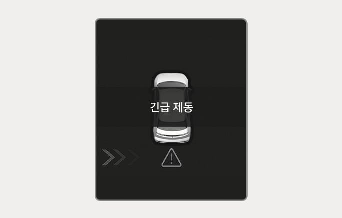

후방 교차 충돌방지 보조 작동

2C_SideMirrorWaringLamp

2C_RCCAEmergencyBrakingInfo
충돌 위험을 감지하면 사이드 미러 경고등, 경고문, 경고음, 스티어링 휠 진동을 통해 긴급 제동을 알립니다. 인포테인먼트 시스템 화면의 후방 영상에도 경고가 표시됩니다(사양 적용 시).
긴급 제동은 다음의 조건에서 작동합니다.
-
'R'(후진) 상태에서 8 km/h 이하로 주행 중인 경우
-
후측방 차량과의 거리가 약 1.5 m 이내인 경우
-
후측방 차량의 속도가 5 km/h 이상인 경우
후측방 차량과의 거리가 약 25 m 이내인 경우 충돌 경고합니다.
긴급 제동에 의한 정차는 약 2초 동안 유지되며 이후 제동 제어가 종료됩니다. 안전을 위해 즉시 브레이크 페달을 밟고 주변 상황을 확인하십시오.
-
후방 교차 충돌 방지 보조에 의한 제동 제어 중 운전자가 충분한 힘으로 브레이크 페달을 밟으면 제동 제어가 해제됩니다.
-
후측방 차량의 상태가 다음과 같을 경우 제동 제어가 해제됩니다.
-
감지 범위에서 벗어나는 경우
-
자차 뒤를 지나가는 경우
-
진행 방향이 자차를 향하지 않는 경우
-
접근 속도가 느려지는 경우
-
운전자가 강하게 브레이크 페달을 밟는 경우
-
-
후방 교차 충돌방지 보조가 작동할 때 가속 페달을 과하게 밟으면 제동 제어가 해제됩니다.
-
후방 교차 충돌방지 보조는 모든 상황에서 작동하지 않으며, 작동하더라도 충돌을 회피하지 못할 수 있습니다.
-
후방 교차 충돌방지 보조는 주위 상황 및 주행 조건에 의해 경고를 늦게 하거나 하지 않을 수도 있으므로 위험 상황에 대비하여 항상 주위를 확인하십시오.
-
차량 조작의 책임은 운전자에게 있습니다. 안전 기능에만 의존하여 위험하게 주행하지 마시고, 항상 주변 상황을 직접 확인하고 안전 운전하십시오.
-
절대 사람이나 사물을 대상으로 기능을 시험하지 마십시오. 심각한 부상이나 사망에 이를 수 있습니다.
-
차체 자세 제어(ESC) 장치가 다음과 같은 상태인 경우 클러스터에 경고문이 표시되어도 제동 제어가 작동하지 않을 수 있습니다.
-
차체 자세 제어(ESC) 장치 경고등이 켜진 경우
-
차체 자세 제어(ESC) 장치가 다른 기능을 수행하는 경우
-
-
다른 기능의 경고문이 표시되거나 경고음이 울리는 동안에는 후방 교차 충돌방지 보조의 경고문이 표시되지 않거나 경고음이 울리지 않을 수 있습니다.
-
차량 내부 및 외부 소리로 인해 후방 교차 충돌방지 보조의 경고음이 들리지 않을 수 있습니다. 차량 내부 음량을 적절하게 조절하고 항상 주의를 기울이십시오.
-
후방 교차 충돌방지 보조 작동 시 탑승자 및 차량 내 물건이 움직여 다칠 수 있으므로 항상 주의를 기울이고 반드시 전 좌석에서 안전벨트를 착용하십시오.
-
충돌 위험 상황에서 운전자가 브레이크 페달을 밟으면 후방 교차 충돌방지 보조가 작동하지 않을 수 있습니다.
-
후방 교차 충돌방지 보조에 이상이 있어도 브레이크 페달 조작에 의한 제동 기능은 정상적으로 작동합니다.
-
제동 제어가 작동하면 안전을 위해 즉시 브레이크 페달을 밟고 주변 상황을 확인하십시오.
-
제동 제어는 'R'(후진)로 변속한 후에 좌우 접근에 대해 1회 씩만 작동합니다.